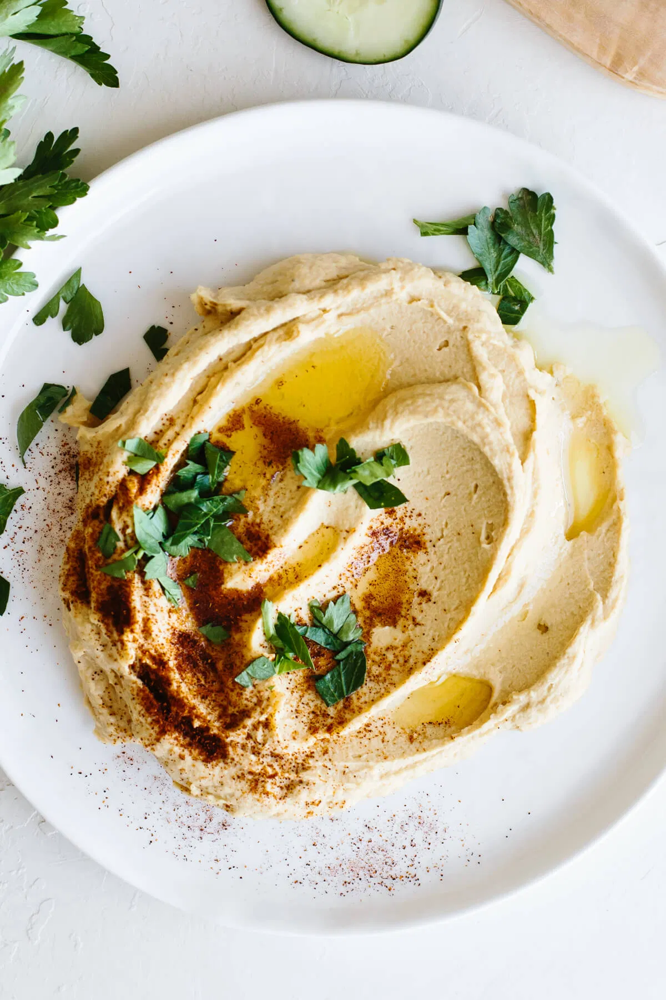

Hummus

Made from a handful of fresh ingredients, and it only takes minutes to cook.
Ingredients
- 30 oz Chickpeas
- 1/3 cup Water
- 1/2 cup Tahini
- 1/4 cup olive oil
- 2 Lemons
- 2 Garlic Cloves
- 1 tsp Cumin
- 1/2 tsp Salt
- Olive oil
- Paprika
- Fresh Parsley
Steps
- Add all the ingredients to your blender or high-powered blender and secure the lid. Remove the lid cap and insert the tamper.
- Turn the blender on high for 30 seconds (or more for a creamier texture) and use the tamper to push the hummus into the blades. Add more chickpea liquid, if desired, for a softer hummus.
- Add the hummus to a serving plate and garnish with olive oil, paprika and fresh parsley.